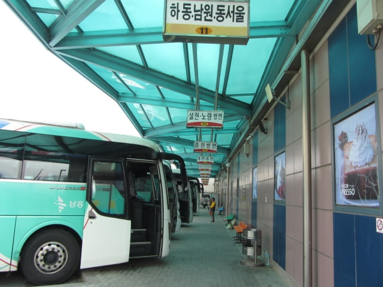

4.9.2017 (星期日)
時間匆匆, 不經不覺地已經在順天 Guesthouse Happy Tour 賓館住了四晚, 今早便離開順天, 繼續沿沿韓國南部往東移動, 乘巴士往這旅程的第十一個停留城市 — 南海 (남해 Namhae), 也意味這韓國春天之旅漸漸接近尾聲了。
早上七時起床, 梳洗完畢, 照例往一樓餐廳吃麵包、煎蛋早餐。用完早餐, 返回房間收拾行李, 負上背囊, 於早上八時十分離開賓館, 步行往順天綜合巴士客運站, 準備搭乘早上 9:20 的巴士往南海。住了四晚, 離開前難免有些依依不捨的感覺。

走幾十步便經過「건양식당」餐館, 我們在這裡吃了順天最豪的一個超豐富海鮮晚餐, 每位是 15,000 韓元, 想起也開心。
走出小路, 在路口轉左一直走, 這條路真是給我們走爛, 地上那裡有個洞也知道。
順天綜合巴士客運站
步行約二十分, 於早上八時三十分便抵達順天綜合巴士客運站。按出發前準備的資料, 順天綜合巴士客運站每天只有四班巴士往南海, 因恐怕滿座, 便提早來巴士站購票。原本想昨天從寶城乘巴士回來時預先購買的, 但恐怕溝通困難, 攪錯了便更麻煩, 便決定今天早些來購買。
順天綜合巴士客運站 往 南海公用客運站 時刻表
**9:20 / 13:00 / 15:40 / 19:30
進入車站一樓大堂, 買了兩張往南海 (남해 Namhae)的巴士車票, 每位是 6,200 韓元。
因還有五十分鐘才開車, 便往車站外面的街道隨便逛逛。
在附近街道打了一圈, 約早上九時返回順天綜合巴士客運站。
順天綜合巴士客運站乘巴士往南海
往南海的巴士於早上九時十五分駛來11號月台靠站。登上了巴士, 座位明顯比一般的長途巴士寬敞舒適。
巴士準時在早上九時二十分從順天綜合巴士客運站開出。巴士行駛了約二十分鐘後, 在這巴士站停靠後, 便一直駛往南海。
沿途風景一般。
露梁海峽 (노량해협)．南海大橋 (남해대교)
當大海 (露梁海峽) 在右邊窗外閃出, 意味快到達南海郡了!
再過一會, 已經看見跨越露梁海峽的南海大橋。

巴士開始駛上南海大橋, 我們在下午也會從南海郡步行沿南海大橋穿越露梁海峽來到這裡, 想起也興奮。
南海郡~~~ 我們來了!

南海公用客運站 (남해시외버스터미널)
巴士駛過南海大橋, 便進入了南海郡, 接著再行駛約十五分鐘, 於早上十時二十五分抵達南海公用客運站, 行車時間約一小時十分。我們會在南海住宿三晚, 然後乘巴士往這旅程最後的一個停留城市 — 釜山。
